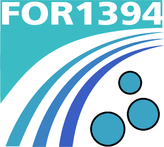
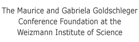
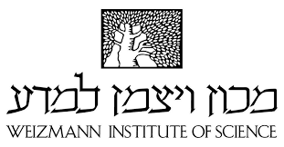

| Home | Speakers | Registration | Program | Directions | Flyer |
Amorphous solids span a wide array of materials, from granular (like sand), glassy (like silica or metallic glasses, to soft materials like colloids. Amorphous materials are ubiquitous in applications, and understanding their macroscopic properties is a major aim for materials science and statistical physics. In the lab, amorphous materials are produced from a melt, following non-equilibrium quenches into the solid state. Amorphous materials are also produced in nature by self-assembly or by driven, active processes in biology, to impair functions such as structural color or mechanical stability.
Fundamental questions arise in how to describe material properties that depend on the processing history and on prevalent plastic responses. Also, many amorphous materials of technological interest as new functional materials are meso-structured, which renders them prone to strongly nonlinear and heterogeneous response even under moderate driving forces.
Theoretical approaches to describe such phenomena are routed in different approaches: one can start from the rheology of an increasingly viscous/visco-elastic fluid, or from the statistical mechanics of a low-temperature system with frozen disorder. The former approach naturally puts emphasis on temporal, non-Markovian history effects, while the latter emphasizes the role of spatial heterogeneities and elasto-plastic interactions. It is at the liquid-solid transition where these approaches need to meet, but it is still open how a unified physical picture emerges from this.
The aim of this Minerva school is to present to young researchers the various approaches that are relevant for dealing with amorphous materials, and to stipulate exchange between the different theories. This reflects recent research, for example the elaboration of the nonlinear rheology of deformable particles, the discovery of elastic stress- and strain-correlations even in the liquid, the elucidation of phonon transport and vibrational excitations in disordered media, or the addition of thermal effects to the deformation of amorphous solids.
|  |  |
|
 |